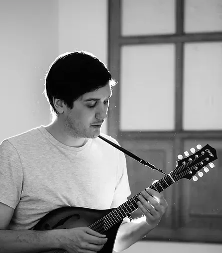

About Ryan
At the age of 15 Ryan's dad bought him a guitar and said "If you learn to play it, it's yours. If you don't, it's mine." More than a decade later he has two mandolins, five guitars, twenty-six harmonicas and one EP - aptly entitled Progress.
Ryan writes and performs his own music, a blend of blues, country, and pop while the lyrics lean toward the absurdity of modern life and political satire. You can find him gigging at pubs, bars, clubs and the occasional street corner in and around Toronto.
He's toured all over Europe and the United States with the popular Norwegian artist Eric Ness. He co-wrote Eric Ness’ entire debut album Blah, Blah, Blah, which quickly reached #13 on Norway’s iTunes most downloaded list. The band was featured on BBC radio and RBB (National German TV).
Ryan's continuing on the nebulous path of a singer-songwriter in an industry that even the insiders don't seem to understand. And it feels good.
